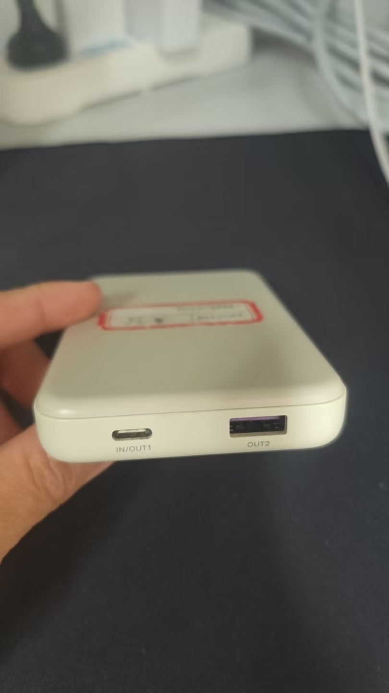

“白色充电宝，塑料的，顶部贴着红色标签，一个 Type-C 一个 USB。”
404NotFound · 跨模态失物招领
拍一张照片，
找到它的主人。
失主只写一句话，拾获者只拍一张照片。我们把两边映射到同一个向量空间，再用能核对的证据把候选重新排一遍。
- 12
- 组演示数据
- 108
- 项自动化测试
- 0.944
- MRR（本机评估）
→ 开始，或用右侧页码跳转
失主
白色充电宝，顶部贴着红色标签
充电宝白色塑料
0.562排序指标

4 项证据一致类型 · 颜色 · 材质 · 特殊标记
两种人，两种信息
失主记得细节，但只有文字；拾获者手里有实物，但只拍了一张照片。中间隔着一层模态。
关键词匹配会漏掉同义说法；纯图像相似会把黑色耳机排到黑色行李箱后面。所以我们不猜，我们排序并解释。
一次真实的匹配
数据来自本机 items.db，分数由匹配引擎现场重算，页面只负责播放。
分数是排序指标，不是所有权概率。
语义：把一句话和一张照片放进同一个空间
不是关键词匹配，是 CLIP：同一个模型分别编码文字和图片，得到同维度的向量，再比方向。
0.000
cos 相似度
0.323 不算高：同一句描述在 12 件物品里并不是只有一件像。语义负责“把可能的都捞进来”，顺序还要靠证据拉开。
证据，是能逐项核对的事实
从描述里只抽字面出现过的六类属性；缺了不扣分，矛盾才扣分。
| 字段 | 失主 | 拾获 | 判定 |
|---|
“未提及”既不进分子也不进分母；“没有特殊标记”对大多数物品都成立，按中性处理。
语义0.323× 0.720.233
证据1.000→ (1+e)/2 × 0.280.280
时间 / 地点0.050软先验，只加不减+0.050
排序指标0.562
e =（Σ一致 − 0.8 × Σ矛盾）÷ Σ可比；两边都提到的字段才参与。切换上面的例子，数字跟着变。
0.72 / 0.28 是固定权重：证据从全一致翻到全矛盾，最多只值 0.28，等价于 0.389 的相似度差——语义接近时，矛盾翻不过来。
分数不是黑箱
点任意候选，看它为什么排在这里；拖动权重，看排序怎么变。
语义 72%证据 28%
拖动只演示权重的作用；系统里固定为 0.72 / 0.28。
排错了，就问一句
这一对是真实的失败样本：只看语义，耳机掉到第 3。系统挑了一个最能分开候选的问题。
还没有回答。
回答后：错误候选（绿色 logo 的单肩包）被压下去，耳机从第 3 升到第 2。要升到第 1 还差更多证据，我们不夸大。
联系方式，只在双方同意后出现
失主 alice
候选第 1：白色充电宝 · 排序指标 0.56
尚未发送
拾获者 bob
收到一条配对请求
邮箱••••••••••
手机••••••••••
等待处理
页面里用的是 example.invalid 与占位号码；真实系统里，只有 accepted 之后才 JOIN users。
三层，全部跑在本机
悬停任意模块，看它对应的真实文件。
页面
- 登记 / 浏览 / 通知
- 匹配与追问
- 设计令牌
匹配引擎
- CLIP 跨模态召回
- 证据重排
- 属性指纹
数据
- SQLite：物品 / 用户 / 配对
- 指纹表
- 订阅与通知
matching/engine.py悬停上面的模块没有云服务：照片、向量与配对都留在本机。只有主动开启 DeepSeek 视觉时，照片才会发送出去。
12 对，11 对排第一
6 个账号、30 件物品；每对都是“另一个人写的描述 + 一张照片”。
时间/地点软先验 开
11 / 12
时间/地点软先验 关
10 / 12
MRR
0.944 / 0.903
- 唯一的 miss 是耳机：黑色耳机被黑色行李箱压过，排第 1 的是错的。
- 演示集里有 6 条没有对应照片的干扰失物，专门用来检验“能不能把无关的排下去”。
- 指标衡量排序质量，不是所有权概率；真实用户口述下的表现还没验证。
所以，它到底做了什么
- 跨模态召回一句话和一张照片，进同一个向量空间。
- 可核对证据颜色、材质、标记逐项比对；缺失不扣分，矛盾才扣。
- 信息增益追问挑最能分开候选的问题，一次一个，最多四轮。
打开本地演示
手机扫码（同一 Wi-Fi）
127.0.0.1:8501
127.0.0.1:8501
404NotFound · 单机运行 · 数据不出机器